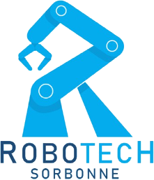
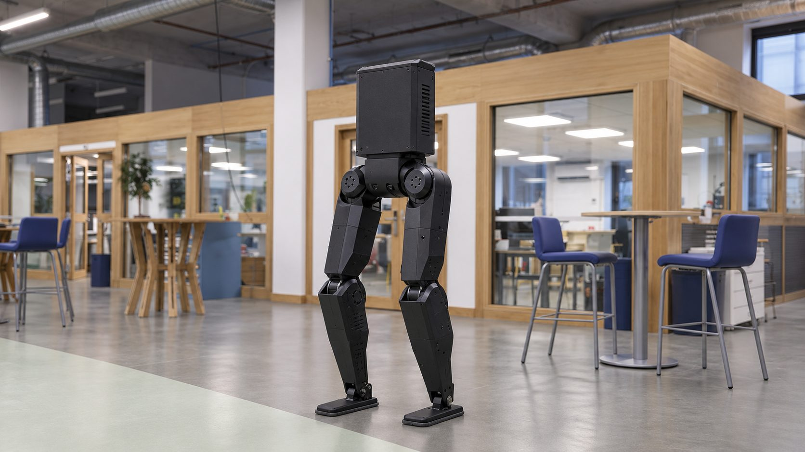
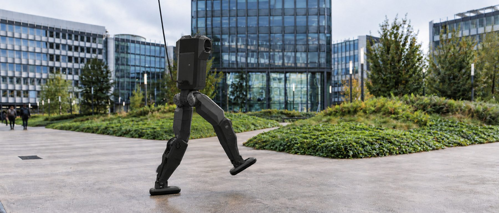

Bipède, ce sont les jambes d'un robot humanoïde : 12 moteurs, 80 cm, 17 kg. Robotech, l'association de robotique de Sorbonne Université, l'a fait marcher en simulation. Il reste à le construire avec le FabLab de l'université, et cette étape n'aura lieu que si la CVEC la finance.
Aujourd'hui, ce robot n'existe que dans un ordinateur. Sans la subvention CVEC, il y restera.
Ce sont des images brutes de nos simulations MuJoCo, sans montage ni effet.
Nous partons des jambes du K-Bot, un humanoïde open source de K-Scale Labs, et nous ajoutons à chaque cheville un axe qui lui manquait : le roulis, pour se rattraper quand on le pousse de côté. Les moteurs et l'architecture des jambes sont ceux d'un robot qui marche déjà, ce qui nous évite de tout réinventer.
| Objectif 1 | Rester stable debout |
| Objectif 2 | Marcher en suivant une manette |
| Objectif 3 | Encaisser une poussée de 80 N sans tomber |
| Taille et masse | Environ 80 cm, 17 kg |
| Axes par jambe | 5 en simulation aujourd'hui, 6 sur le robot fabriqué |
| Moteurs | 12 moteurs RobStride (RS02, RS03, RS04, RS05) |
| Structure | Pièces imprimées en PA6-CF au FabLab |
| Calcul embarqué | NVIDIA Jetson |
| Apprentissage | Par renforcement (PPO), 4 096 robots simulés en parallèle |
| Fréquence de décision | 50 fois par seconde |
Le robot reste au FabLab. Les promotions suivantes partiront de jambes qui tiennent debout pour lui ajouter un buste, des bras ou de l'autonomie.
Les pièces qui portent le robot sortent des imprimantes du FabLab, en nylon chargé de fibre de carbone (PA6-CF), et pas d'un atelier d'usinage.
Plans, code, liste des pièces et guide de reprise, en accès libre sur GitHub et sur le wiki du FabLab. Nous y notons aussi chaque essai raté et la raison de l'échec.
Conçu, entraîné et fabriqué par des étudiants, il représentera la robotique humanoïde de Sorbonne Université, et Robotech et le FabLab pourront s'en servir pour leurs ateliers.

Trois élèves ingénieurs en dernière année de la spécialité robotique de Polytech Sorbonne, membres de Robotech, l'association de robotique de Sorbonne Université.
Nous avons payé la simulation nous-mêmes. La fabrication, nous ne pouvons pas la financer seuls : sans la CVEC, le robot reste dans l'ordinateur.
Près de la moitié du budget, 3 052 €, va aux douze moteurs, parce qu'ils ne s'impriment pas. Le reste couvre l'électronique de commande et de sécurité, la batterie et la matière d'impression.
| Banc d'essai à 4 moteurs | 1 599 € |
| Robot complet | 4 152 € |
| Imprévus, 10 % | 575 € |
| Total TTC | 6 326 € |
| Demandé à la CVEC | à définir |

Seule la première est faite. Toutes les suivantes dépendent de la subvention.
Simulation, choix des moteurs, marche apprise
Vérifier en vrai ce que la simulation suppose
Impression et montage de la première jambe
Le robot complet, retenu par un portique
La marche apprise passe sur le robot réel
À chaque étape (premier moteur, première jambe, robot debout), nous le présentons au FabLab, et c'est ouvert à tous. Vous pourrez aussi le voir aux journées portes ouvertes et à la Fête de la science.
FabLab de Sorbonne Université, campus Pierre et Marie Curie, 4 place Jussieu, 75005 Paris. Les nouvelles sont publiées sur l'Instagram et le Discord de Robotech, et sur LinkedIn.